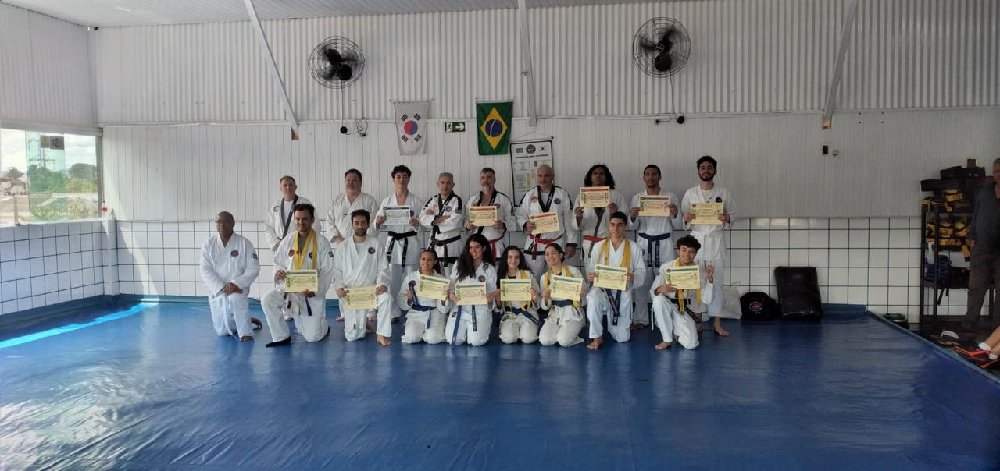
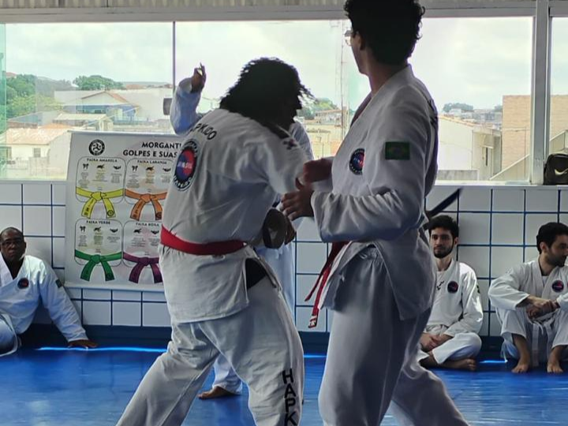

🥋 O Caminho da Harmonia e da Energia (Hapkido)
Bem-vindo(a) ao meu espaço no DojoTech. Meu nome é Carlos Tevez e esta página é um breve resumo da minha dedicação e paixão por uma das artes marciais coreanas mais completas: o Hapkido.
O Hapkido, que significa "caminho da coordenação da energia", não é apenas uma prática física, mas uma filosofia que molda a disciplina, o respeito e a autoconfiança. Minha trajetória é marcada pela busca constante do equilíbrio entre as técnicas de ataque (Técnicas de Mão e Chutes), defesa (Rolamentos e Quedas) e imobilização (Alavancas e Chaves Articulares).
📜 Minha Trajetória Cronológica
Iniciei meus estudos no Hapkido em 2012, sob a orientação do Mestre Diniz e Mestre Kid . Desde então, cada faixa conquistada representou um novo nível de compromisso e aprendizado.
- [2012] - Início da Prática: O primeiro contato com a arte.
- [2014] - Faixa Amarela: Foco em bases e defesas pessoais básicas.
- [2019] - Faixa Vermelha: Aprofundamento em chaves articulares e armas.
- [2024] - Faixa Preta (1º Dan): Compromisso de perpetuar a arte marcial.

✨ Filosofia e Princípios Básicos
O Hapkido vai além da técnica; é uma filosofia de vida baseada em três pilares que guiam a aplicação prática e o desenvolvimento pessoal:
- **1. Não-Resistência (원 - *Won*):** Utilizar a força do adversário a meu favor.
- **2. Círculo (화 - *Hwa*):** Movimento contínuo e circular.
- **3. Energia (유 - *Yu*):** O controle e a canalização da minha própria energia.
Esses princípios garantem que a defesa seja fluida, eficiente e adaptável a qualquer situação.

🥋 Treinamento com Armas Tradicionais
A parte de armas no Hapkido é fascinante, ensinando a manejar extensões do corpo, o que melhora a coordenação e a percepção de distância.
O estudo dessas ferramentas (como o bastão curto *Dan Bong* ou a espada *Gum*) é feito com disciplina e foco, aprimorando o controle corporal e a precisão dos movimentos circulares. É uma das áreas que mais demonstram a fluidez da arte.

🤝 Conecte-se
Se você também é um(a) praticante de artes marciais ou tem interesse em saber mais sobre o Hapkido, sinta-se à vontade para entrar em contato. A jornada marcial é sempre melhor quando compartilhada.